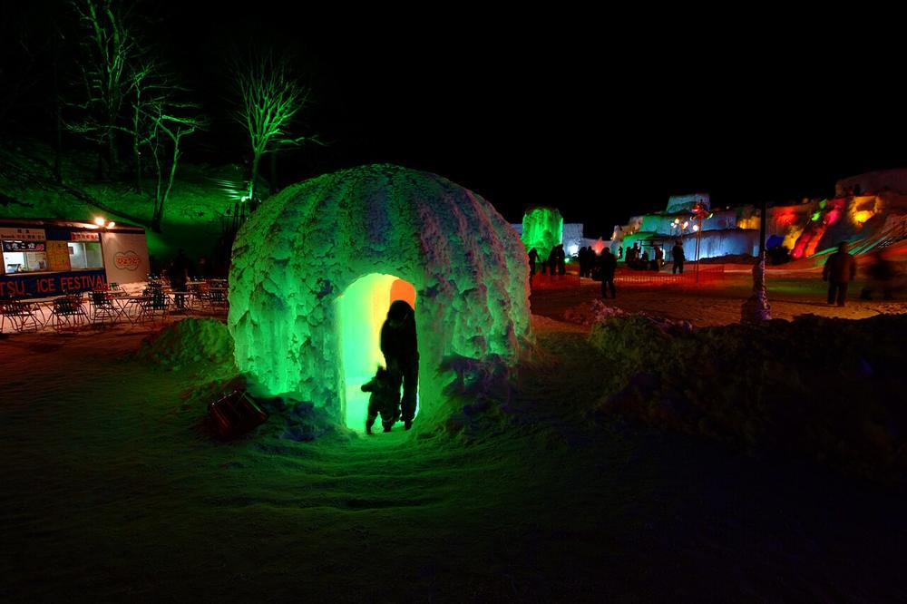
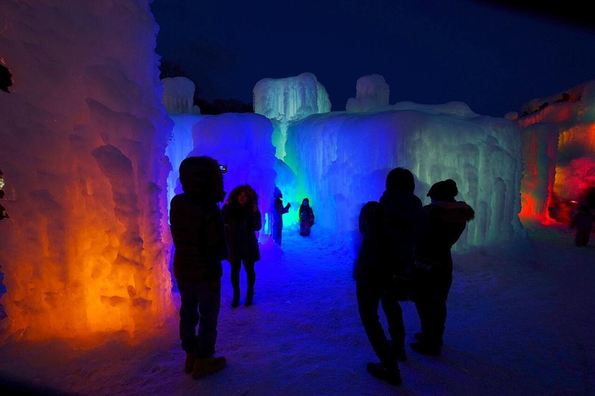
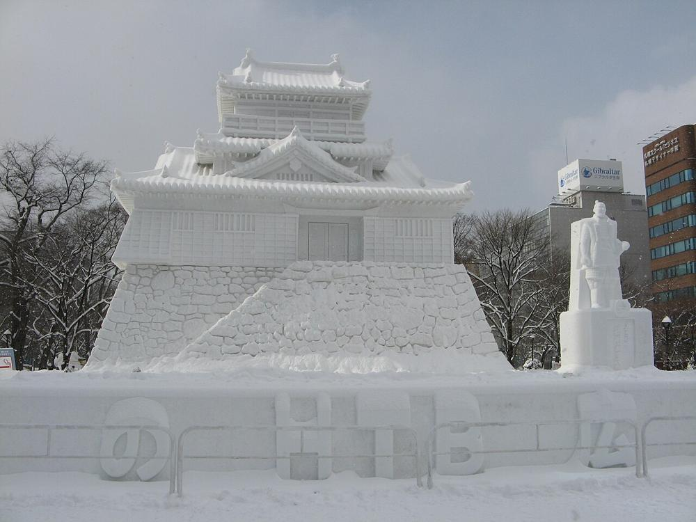

千歲・支笏湖冰濤祭
Day 1 晚上用支笏湖水一層層噴在骨架上凍成的冰塔、冰洞與冰滑梯。白天是透亮的「支笏湖藍」，晚上換成彩色燈光，是北海道最夢幻的冰祭之一。
- 期間
- 2027/1/30（六）– 2/23（二）
- 時間
- 10:00–20:00，點燈 16:30–20:00
- 門票
- 平日 ¥1,000（2/9 是平日）；週末假日較貴
- 地點
- 支笏湖溫泉街旁，離新千歲機場約 50 分鐘車程

2027.2.9（二）– 2.14（日）· 6 天 5 夜
支笏湖冰濤祭的彩色冰洞、札幌雪祭最後三天、小樽雪燈之路，再往北到旭山動物園與美瑛的銀白丘陵。出發前看行程，到當地打開這頁就是導覽。
新千歲 → 支笏湖 → 札幌 → 小樽 → 旭川・美瑛 → 札幌 → 新千歲。點下面任一天直接跳到當天行程。

用支笏湖水一層層噴在骨架上凍成的冰塔、冰洞與冰滑梯。白天是透亮的「支笏湖藍」，晚上換成彩色燈光，是北海道最夢幻的冰祭之一。

大通公園 1 丁目到 11 丁目約 1.5 公里，排滿數層樓高的大雪像與上百座市民雪像；入夜後點燈、投影光雕。薄野會場則是精緻的冰雕街。
現在離出發還太遠，查不到真正的預報，下表是氣象廳 1991–2020 年 2 月平年值（札幌為官方數值，其他地點為依鄰近測站估算）。出發前 16 天起，這頁會自動抓取每天目的地的即時預報，顯示在每天行程的天氣欄。
| 日期 | 地點 | 平年高／低溫 | 寒冷度 | 穿搭重點 |
|---|
日出約 6:40、日落約 16:55（札幌，2 月中旬）。2026 年 2 月北海道曾是史上最暖的 2 月，實際溫度可能偏差 5°C 以上，出發前一週請再看預報。
發熱衣褲（UNIQLO HEATTECH 極暖／超極暖、羊毛衣），加一雙羊毛襪。避免純棉，流汗後會變冷。
刷毛衣或輕羽絨背心。室內、電車、商店暖氣很強，要能快速脫掉。
蓋過臀部的長版羽絨或防水雪衣，帽子可拆。支笏湖、美瑛晚上建議再加防水雪褲。
遮耳毛帽、脖圍、觸控內手套＋防水外手套、防滑雪靴。暖暖包貼在腰、腳底。
打勾會記在這支手機的瀏覽器裡，收行李時可以直接拿來對。
最重要的一件事：鞋子
札幌、小樽的人行道被踩成「鏡面冰」，跌倒是遊客最常見的受傷原因。鞋底要有深紋的防水雪靴，再準備一副可拆式冰爪（鞋釘），在冰濤祭會場、小樽運河、美瑛停車場特別有用。台灣可在迪卡儂買；札幌的唐吉訶德、地下街鞋店與便利商店也買得到。
札幌市區塞車、停車貴，雪祭期間更嚴重；札幌到旭川 140 公里的雪地高速公路也不適合第一次雪地開車。所以建議只在需要的兩段租車，城市之間搭 JR。
支笏湖沒有方便的大眾運輸（溫泉巴士班次少、末班早），租車最自由。約 100 公里，開車時間合計 2 小時。異地還車（乗り捨て）在道央區內通常免費或很便宜，預約時確認。
旭山動物園、美瑛丘陵、白金青池分散在鄉間，冬季巴士班次很少。旭川站前租車公司多，同點取還車最省。不想開車：可改參加從札幌出發的「旭山動物園＋美瑛青池」一日巴士團（KKday、Klook 都有）。
若遇暴風雪，JR 與機場可能停駛／停飛，2/14 早上先看航班狀態再出門。
資料整理於 2026 年 11 月：祭典日期依主辦單位公告與旅遊媒體報導，小樽雪燈之路 2027 年日期尚未公布。營業時間、票價可能變動，請以官網為準。